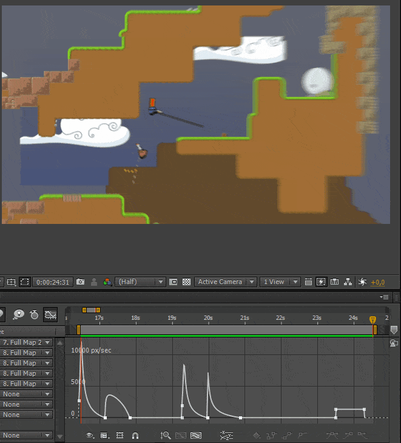
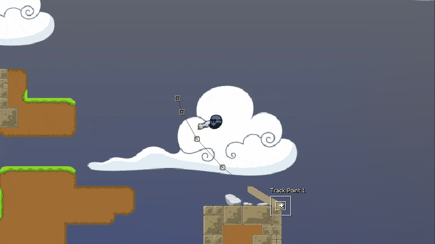
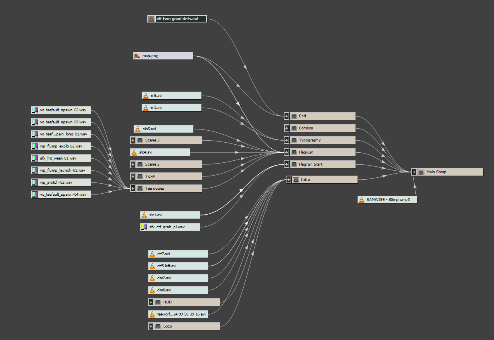

habe ich auch gleichzeitig ein neues Teeworlds Video auf meinem Youtube Channel hochgeladen.
Ungefähr 13 Stunden wurden in das Video investiert. 15 Minuten hat es gebraucht zum hochladen.
7 Jahre ist es her seit meinem ersten Video und 7 Jahre habe ich auch immer nur ein Programm benutzt:
Sony Vegas.
Hier ist's zu Ende weil mit After Effects einfach der Raum an Möglichkeiten unermesslich größer ist.
Es fängt an mit einfachem Pan/Crop,

denn was hierbei zu Vegas die Sache deutlich besser aussehen lässt sind
zusätzliche Optionen Geschwindigkeit und Beschleunigung zwischen Keyframes zu optimieren.
Automatisiertes Motion Tracking,

damit hinterher der "stehende" Text eingefügt wird.
Das kompositionieren von roher Footage.

Mehrere Clips können in ihrer Position in Relation stehen und lassen sich gemeinsam manipulieren. Das alles trägt einfach dazu bei dass ich unendlich viel Spaß habe die ganzen neuen Möglichkeiten auszuprobieren lol.
Hier bleibt noch viel für mich zu lernen. Schwer ist nur dass uns Teeworlds mit seinem derzeitigen Demo-System zu stark limitiert. Eine in-game Kamera die sich manipulieren lässt wäre wirklich der nötige letzte Segen. A man can dream.

ResamVi
1. April, 2017
Zum Start des Blogs.